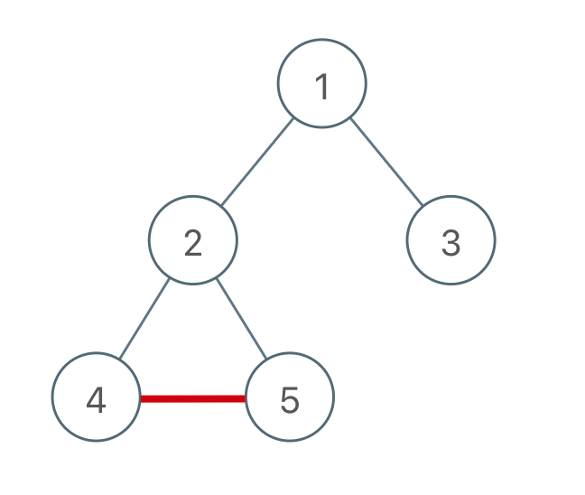
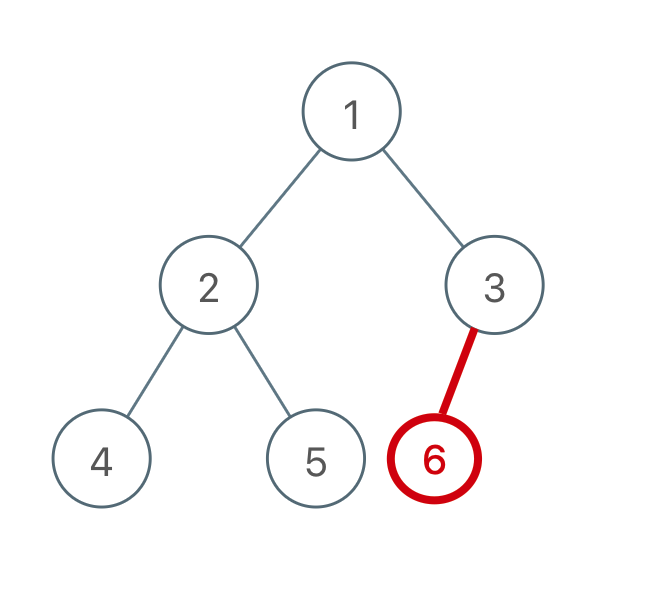
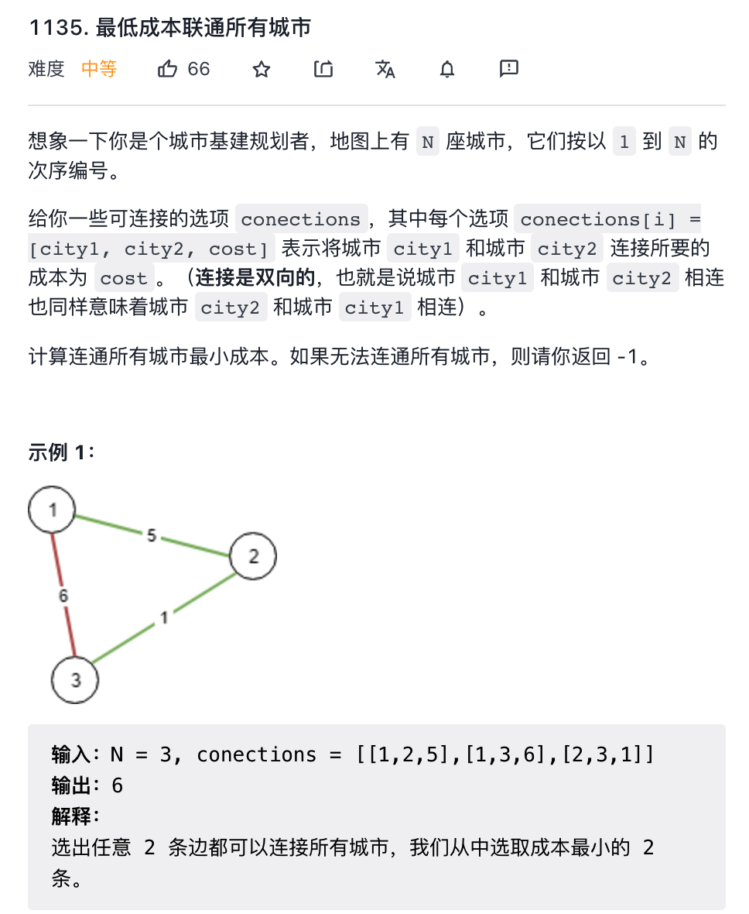

本文介绍图的最小生成树算法Kruskal 算法。
阅读之前需要先了解
- 图和树数据结构
- 加权图、生成树、最小生成树
- Kruskal 算法基本思想
在Kruskal 算法中，需要保证每次新加入的边不会让树变成图，即不能让树包含环。那么 Union-Find 算法就是帮你干这个事儿的。
像下面这样添加边会出现环：

而这样添加边则不会出现环：

总结一下规律就是：
对于添加的这条边，如果该边的两个节点本来就在同一连通分量里，那么添加这条边会产生环；反之，如果该边的两个节点不在同一连通分量里，则添加这条边不会产生环。
而判断两个节点是否连通（是否在同一个连通分量中）就是 Union-Find 算法的拿手绝活。
力扣第 1135 题「最低成本联通所有城市」，这是一道标准的最小生成树问题：

每座城市相当于图中的节点，连通城市的成本相当于边的权重，连通所有城市的最小成本即是最小生成树的权重之和。
代码如下：
from typing import List |